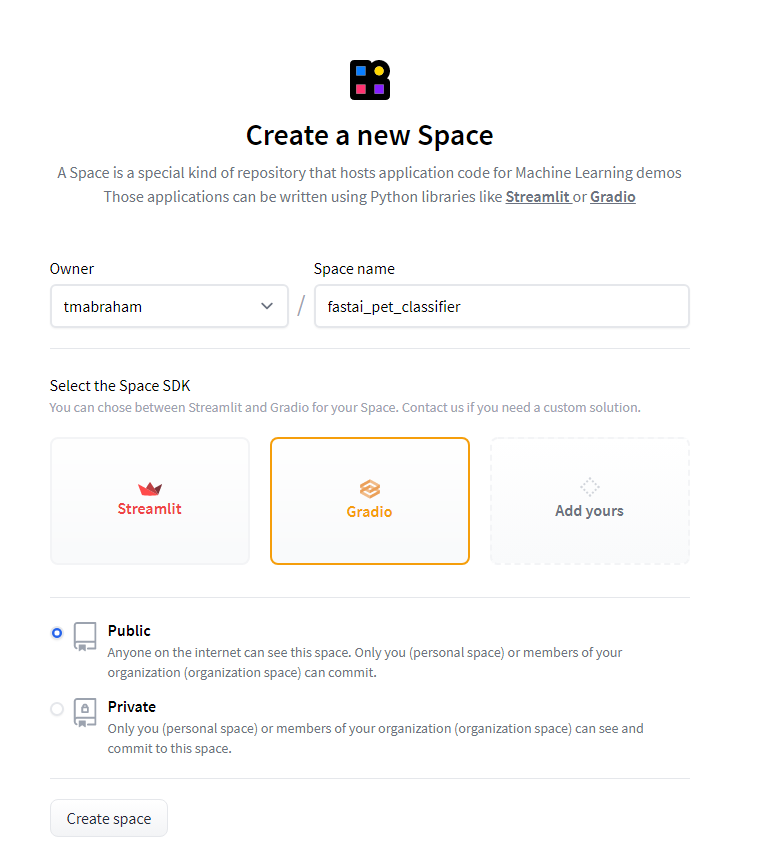
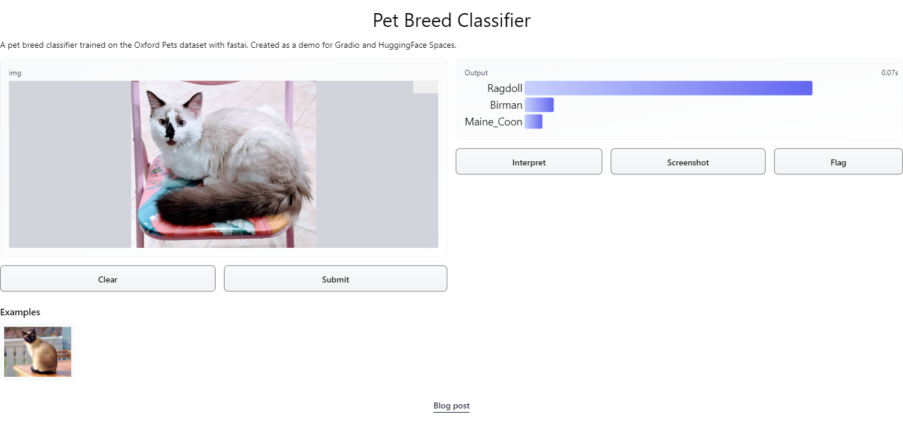

After you train a machine learning model, the next thing to do is showcase it to the world by making a demo. Currently, the easiest way to do so is with Gradio, hosting on HuggingFace Spaces. With the Gradio framework deployed on Spaces, it takes <10 minutes to deploy a model! Let’s see how we can easily deploy a model for the world to try out with these platforms. We will use a classic CNN pet classifier as an example.
Preliminaries: Training a pet classifier
Before we make a demo, we need to have a model to actually demo! Let’s quickly train a simple ResNet50 pet classifier on the Oxford Pets dataset using fastai.
And with fastai, it’s that simple! Learn more about fastai, a simple and flexible PyTorch training framework, over here.
Using Gradio
Let’s see how to make a demo web app with Gradio. First let’s load our model:
learn = load_learner('export.pkl')
Next, let’s define a prediction function our model:
labels = learn.dls.vocabdef predict(img): img = PILImage.create(img) pred,pred_idx,probs = learn.predict(img)return {labels[i]: float(probs[i]) for i inrange(len(labels))}
Finally, let’s import Gradio and use it’s functionality to make an interface and launch it. Note that if you are doing this from a notebook, the Gradio demo will also show up within the notebook for you to try interactively (here I just show screenshots).
import gradio as grgr.Interface(fn=predict, inputs=gr.inputs.Image(shape=(512, 512)), outputs=gr.outputs.Label(num_top_classes=3)).launch(share=True)
Running on local URL: http://127.0.0.1:7860/
Running on public URL: https://10290.gradio.app
This share link will expire in 72 hours. To get longer links, send an email to: support@gradio.app
That’s it! The actual creation of the demo takes one line!1
All Gradio interfaces are created by constructing a gradio.Interface() object. As you can see in this example, the Interface object takes in the function that we want to make an interface for (usually an ML model inference function), Gradio input components (the number of input components should match the number of parameters of the provided function), and Gradio output components (the number of output components should match the number of values returned by the provided function). Gradio provides components for various types of input and output types. This includes: images (upload, draw, or webcam), video, audio (upload or microphone), textboxes, dataframes, timeseries, generic files, and more! So you should be able to create a Gradio demo for virtually any type of ML task you can think of!
After the gradio.Interface() object is defined, the interface is launched with the launch method.
Optional: customizing our Gradio app
Gradio has lots of features that we can use to customize our app. Let’s go over a few of these features and add them to our demo. All of these features are arguments for the instantiation of the Interface class.
First of all, we can pass in a title and description for our app which goes at the top before our input and output components:
title ="Pet Breed Classifier"description ="A pet breed classifier trained on the Oxford Pets dataset with fastai. Created as a demo for Gradio and HuggingFace Spaces."
We can also put a link at the bottom of our demo. Here I will link to this blog post:
We can also provide some example inputs that people can try out. Here I have provided an example Siamese cat image, which is in the same directory as my code:
examples = ['siamese.jpg']
Another interesting feature that Gradio has is the ability for interpretation so that users can understand what parts of the input are responsible for the output. We’ll use the default interpretation function provided by Gradio but you can use your own as well:
interpretation='default'
Note that the default interpretation function needs scikit-image to be installed. More information on the interpretation feature is provided here.
Gradio also provides a screenshotting feature that can make it really easy to share your examples and results with others. It is enabled by default.
Finally, Gradio also supports serving of inference requests with a queue. This can be helpful when your app receives a significant amount of traffic. We’ll enable a queue here:
enable_queue=True
You can also add custom CSS for your Gradio app but we‚Äôll not do that here (my CSS skills are essentially non-existent! üòÇ). Additionally, you can set live=True so that it will automatically submit when you make a change to the input, but removes the Submit button so I won‚Äôt use it for now.
Let’s put it all together and make our interface with these additional features:
Running on local URL: http://127.0.0.1:7861/
Running on public URL: https://30513.gradio.app
This share link will expire in 72 hours. To get longer links, send an email to: support@gradio.app
Check the Gradio documentation for more information on how to customize your interface.
Let’s put it all into one file which we name app.py:
import gradio as grfrom fastai.vision.allimport*import skimagelearn = load_learner('export.pkl')labels = learn.dls.vocabdef predict(img): img = PILImage.create(img) pred,pred_idx,probs = learn.predict(img)return {labels[i]: float(probs[i]) for i inrange(len(labels))}title ="Pet Breed Classifier"description ="A pet breed classifier trained on the Oxford Pets dataset with fastai. Created as a demo for Gradio and HuggingFace Spaces."article="<p style='text-align: center'><a href='https://tmabraham.github.io/blog/gradio_hf_spaces_tutorial' target='_blank'>Blog post</a></p>"examples = ['siamese.jpg']interpretation='default'enable_queue=Truegr.Interface(fn=predict,inputs=gr.inputs.Image(shape=(512, 512)),outputs=gr.outputs.Label(num_top_classes=3),title=title,description=description,article=article,examples=examples,interpretation=interpretation,enable_queue=enable_queue).launch()
Let’s also make a requirements.txt file which will allow us to install the packages that we need in whatever environment we need:
fastai
scikit-image
Now that we have our self-contained web app, we could deploy this on any webserver or cloud platform that we want. But let’s see how we can use HuggingFace Spaces to deploy it.
Using HuggingFace Spaces
HuggingFace Spaces is a free-to-use platform for hosting machine learning demos and apps. The Spaces environment provided is a CPU environment with 16 GB RAM and 8 cores. It currently supports the Gradio and Streamlit platforms. Here we will make a Space for our Gradio demo.
In order to be able to create a HuggingFace Space, you need to have a HuggingFace account. You can sign up for free here. After signing up, you can create a Space by clicking “New Space” on the navigation menu (press on your profile image).

Now you will be shown instructions on how to add your code to this Space from the command line to prepare the demo. Spaces are essentially git repositories (like GitHub) with an app.py file from which the demo is prepared.
So we can clone the repository to a local directory,
Now before we commit our files, there is something we need to pay attention to. Our model file export.pkl is too big to be handled by git. So instead we need to use git-lfs which you first need to install. If you are on Debian or Ubuntu, you can directly use apt-get install git-lfs (which installs an older version but that’s not really an issue). For other Linux distros, you can use this script which Jeremy Howard has prepared. For Windows, you can download and run the installer from here. For MacOS, you can do brew install git-lfs.
Once you have installed git-lfs, you can then initialize git-lfs in the repository for the app in the following way:
Now, we can commit and push the changes to the Space.
git commit -am "let's deploy to huggingface spaces"
git push
Alternatively, the files can be uploaded via the Spaces UI. When you go to your Space, under “Files and versions”, there is an “Add files” button which you can use to upload your app files.
After a few moments, during which the app is being built, our demo should show up on the HuggingFace Space.
That’s it! In a few minutes, you trained a pet classifier model with fastai, made a demo interface with Gradio, and hosted it for free on a HuggingFace Space! You can try it out right below or you can try it out on HuggingFace Spaces here. All the files described in this post located here).2
If you are a more advanced user with expertise in web development, you might be interested to know that there is an API available for any Gradio interface (there is a “view the api” link at the bottom of the interface). For example, here is a link to the API docs for my interface. This provides much more flexibility, like interacting with your model very easily in code. For example, here I can take any image URL and get a pet breed prediction with my model.
import requestsimport gradio as grfrom IPython.display import Imagefrom IPython.core.display import HTML image_url ='https://petkeen.com/wp-content/uploads/2021/05/grey-cat.jpeg'data = gr.processing_utils.encode_url_or_file_to_base64(image_url)r = requests.post(url='https://hf.space/embed/tmabraham/fastai_pet_classifier/+/api/predict/', json={"data":[data]})print(f"The breed of this pet is a {(' '.join(r.json()['data'][0]['label'].split('_')))}:")display(Image(url=image_url, width=475))print('Original JSON returned from the request: ', json.dumps(r.json(), indent=2))
There are so many features of Gradio and Spaces that I haven’t mentioned here (like multiple models per demo, the Blocks feature, etc.). Additionally, both Gradio and HuggingFace Spaces are in active development and new, amazing features afe always being added by tje Gradio and HuggingFace teams! For this reason, I also recommend following HuggingFace and Gradio on Twitter to hear about the latest updates and newest features.
I’ll end by sharing a quick example prediction by my pet classifier of our new kitten! Her name is Mimi and, as predicted by my classifier here, she is indeed a Ragdoll kitten!:

Acknowledgements
Thanks to Zach Mueller, Ahsen Khaliq, Abhishek Thakur, and Jeremy Howard for reviewing my blog post.